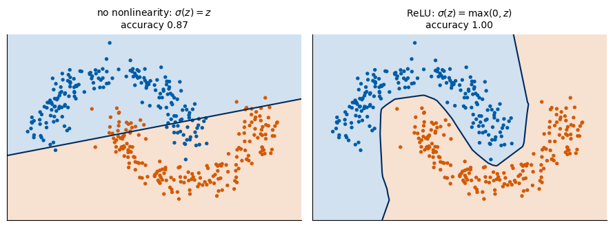
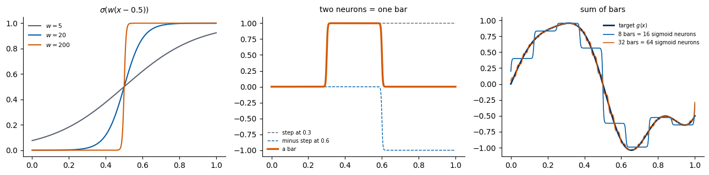

A neural network is a composition of layers \(\mathbf h \mapsto \sigma(W\mathbf h+\mathbf b)\). This notebook shows, with three small experiments, why the activation \(\sigma\) must be nonlinear, and gives the intuition behind the universal approximation theorem:
without \(\sigma\), any number of layers collapses into a single linear map;
with ReLU, three neurons build a “hat”, and sums of hats approximate any continuous function;
a sigmoid with a large weight becomes a step, and differences of steps build any function bar by bar.
It produces the figures of the corresponding slides. Everything runs on the CPU.
Two linear layers are one linear layer: \[
W_2\,(W_1\mathbf x+\mathbf b_1)+\mathbf b_2 \;=\; \underbrace{W_2W_1}_{W}\,\mathbf x+\underbrace{W_2\mathbf b_1+\mathbf b_2}_{\mathbf b}.
\] By induction, any stack of linear layers is a single affine map, so a deep “network” without activations can only draw a straight decision boundary. We train the same architecture (3 hidden layers of 16 neurons) on the two-moons data twice: once with the identity as activation, once with ReLU.
Code
def two_moons(key, n=400, noise=0.12): k1, k2 = jax.random.split(key) t = jax.random.uniform(k1, (n,)) * jnp.pi half = jnp.arange(n) %2 x = jnp.where(half[:, None] ==0, jnp.stack([jnp.cos(t), jnp.sin(t)], 1), jnp.stack([1- jnp.cos(t), 0.5- jnp.sin(t)], 1))return x + noise * jax.random.normal(k2, x.shape), halfX, y = two_moons(jax.random.PRNGKey(0))def init(key, sizes): keys = jax.random.split(key, len(sizes) -1)return [(jax.random.normal(k, (a, b)) / jnp.sqrt(a), jnp.zeros(b)) for k, a, b inzip(keys, sizes[:-1], sizes[1:])]def forward(params, x, act):for W, b in params[:-1]: x = act(x @ W + b) W, b = params[-1]return (x @ W + b)[:, 0] # logitdef train(act, steps=3000, seed=1): params = init(jax.random.PRNGKey(seed), [2, 16, 16, 16, 1]) opt = optax.adam(1e-2); state = opt.init(params) loss =lambda p: optax.sigmoid_binary_cross_entropy(forward(p, X, act), y).mean()@jax.jitdef step(p, s): l, g = jax.value_and_grad(loss)(p) u, s = opt.update(g, s);return optax.apply_updates(p, u), s, lfor _ inrange(steps): params, state, l = step(params, state) acc =float(((forward(params, X, act) >0) == y).mean())return params, accidentity =lambda z: zp_lin, acc_lin = train(identity)p_relu, acc_relu = train(jax.nn.relu)print(f"accuracy on the training data: identity activation {acc_lin:.3f}, ReLU {acc_relu:.3f}")NUMBERS.update(acc_linear=round(acc_lin, 3), acc_relu=round(acc_relu, 3))gx, gy = np.meshgrid(np.linspace(-1.5, 2.5, 300), np.linspace(-1.0, 1.5, 300))grid = jnp.asarray(np.stack([gx.ravel(), gy.ravel()], 1), jnp.float32)fig, ax = plt.subplots(1, 2, figsize=(9, 3.4), sharey=True)for a, (p, act, name, acc) inzip(ax, [(p_lin, identity, "no nonlinearity: $\\sigma(z)=z$", acc_lin), (p_relu, jax.nn.relu, "ReLU: $\\sigma(z)=\\max(0,z)$", acc_relu)]): z = np.asarray(forward(p, grid, act)).reshape(gx.shape) a.contourf(gx, gy, z >0, levels=[-0.5, 0.5, 1.5], colors=[UJBlue, DSOrange], alpha=0.18) a.contour(gx, gy, z, levels=[0], colors=UJNavy, linewidths=1.5) a.scatter(X[:, 0], X[:, 1], c=[UJBlue if v ==0else DSOrange for v in np.asarray(y)], s=8) a.set_title(f"{name}\naccuracy {acc:.2f}", fontsize=10); a.set_xticks([]); a.set_yticks([])fig.tight_layout(); savefig(fig, "gen_uat_linear_collapse.png"); plt.show()
accuracy on the training data: identity activation 0.870, ReLU 1.000

2. A function from ReLU pieces
Three ReLU neurons make a hat of width \(2h\) centred at \(c\): \[
\Lambda_c(x) = \frac{1}{h}\Big[\mathrm{ReLU}(x-c+h) - 2\,\mathrm{ReLU}(x-c) + \mathrm{ReLU}(x-c-h)\Big].
\] Place hats on a grid \(c_k = kh\) and give each the height \(g(c_k)\): the sum \(\sum_k g(c_k)\Lambda_{c_k}(x)\) is the piecewise-linear interpolation of \(g\). This is a one-hidden-layer network whose weights we wrote down by hand, no training. For a smooth \(g\) the interpolation error is at most \(\tfrac{h^2}{8}\max|g''|\), so it decreases as \(1/N^2\) with the number \(N\) of hats.
For a large weight \(w\), \(\sigma(w(x-b))\) with the logistic \(\sigma\) is almost a step at \(x=b\). The difference of two such steps is a bar on \([b_1,b_2]\), and a sum of bars with heights \(g\) at the bar centres approximates \(g\) like a histogram. This is the picture behind Cybenko’s proof for sigmoidal activations (and the visual argument in Nielsen’s book).
Code
sig =lambda z: 1/ (1+ np.exp(-np.clip(z, -60, 60)))fig, ax = plt.subplots(1, 3, figsize=(13, 3.3))for w, col in [(5, UJGray), (20, UJBlue), (200, DSOrange)]: ax[0].plot(xs, sig(w * (xs -0.5)), color=col, label=f"$w={w}$")ax[0].legend(frameon=False, fontsize=8); ax[0].set_title("$\\sigma(w(x-0.5))$", fontsize=10)w =400ax[1].plot(xs, sig(w * (xs -0.3)), "--", color=UJGray, lw=1, label="step at 0.3")ax[1].plot(xs, -sig(w * (xs -0.6)), "--", color=UJBlue, lw=1, label="minus step at 0.6")ax[1].plot(xs, sig(w * (xs -0.3)) - sig(w * (xs -0.6)), color=DSOrange, lw=2.5, label="a bar")ax[1].legend(frameon=False, fontsize=7); ax[1].set_title("two neurons = one bar", fontsize=10)ax[2].plot(xs, g(xs), color=UJNavy, lw=2, label="target $g(x)$")for n, col in [(8, UJBlue), (32, DSOrange)]: e = np.linspace(0, 1, n +1); mid =0.5* (e[1:] + e[:-1]) f =sum(g(m) * (sig(w * (xs - a)) - sig(w * (xs - b))) for m, a, b inzip(mid, e[:-1], e[1:])) ax[2].plot(xs, f, color=col, lw=1.2, label=f"{n} bars = {2* n} sigmoid neurons")ax[2].legend(frameon=False, fontsize=7); ax[2].set_title("sum of bars", fontsize=10)fig.tight_layout(); savefig(fig, "gen_uat_sigmoid_steps.png"); plt.show()

Content and limits of the theorem
Says: for any continuous \(g\) on a compact set and any \(\epsilon>0\) there is a one-hidden-layer network with \(\sup_K|f-g|<\epsilon\), for every activation that is not a polynomial.
Does not say: how many neurons are needed (our constructions need more and more as \(\epsilon\to0\), and in \(d\) input dimensions a grid of hats needs a number of neurons growing exponentially with \(d\)), nor how to find the weights: in practice we train by gradient descent, and a good fit on the training points is not a guarantee between them.
Try it. Replace ReLU by \(\sigma(z)=z^2\) in Section 1. The network is now nonlinear but polynomial; what does the boundary look like, and why does the theorem exclude polynomial activations?
References
G. Cybenko, Approximation by superpositions of a sigmoidal function, Math. Control Signals Systems 2, 303 (1989), doi:10.1007/BF02551274
K. Hornik, M. Stinchcombe, H. White, Multilayer feedforward networks are universal approximators, Neural Networks 2, 359 (1989), doi:10.1016/0893-6080(89)90020-8
M. Leshno, V. Ya. Lin, A. Pinkus, S. Schocken, Multilayer feedforward networks with a nonpolynomial activation function can approximate any function, Neural Networks 6, 861 (1993), doi:10.1016/S0893-6080(05)80131-5